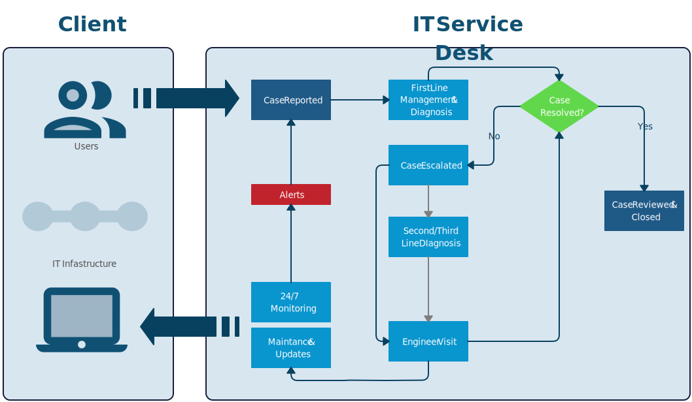
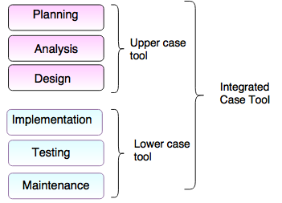

CASE ehk tarkvara raaltehnoloogia
CASE on arenduskeskkond, mis võimaldab automatiseerida, hallata ja lihtsustada süsteemiarenduse protsessi.
CASE-vahendid aitavad automatiseerida tegevusi süsteemiarenduse elutsükli erinevates faasides.
CASE: Loodi 1970 keskel kui tarkvara loomine hakkas muutuma keerukamaks. Enne CASE tööriistu kirjutasid kasutajad kõike paber kujul, nii skeemide kui ka andmetalletus oli paberi kujul.
Esimene tööriista generatsioon loodi automatiseerimiseks ja lihtsustamiseks.
Esimene gen: Fokuseeris dokumentatsiooni automatiseerimisele.
Teine gen : Tööriistadele tulid lisad mis abistasid tarkvara arendust, koodi genereerimist ja projekti manageerimist (Olid enamjaolt platvormispetsiifilised)
Kolmas gen: Lisas mudeli genereerimise, kujundamise ja täiendas koodi genereerimist. Kergendati teiste tarkvarade vahelist integratsiooni.
Neljas gen: Kõige uuem mudel, kasutab pilve lahendusi, erinevad tarkvaralised koostöö võimalused ja adaptiivsed tarkvara loomis võimalused.
Enne CASE tööriistade kasutamist luuakse diagram mis annab kiire kuid täieliku visuaalse informatsiooni projekti kohta;

CASE-vahendid:
Ülemise taseme CASE-vahendid(upper CASE-tools)
Alumise taseme CASE-vahendid(lower CASE-tools)

Koduleht
Ainemapp Koduleht
Kasutatud materjal